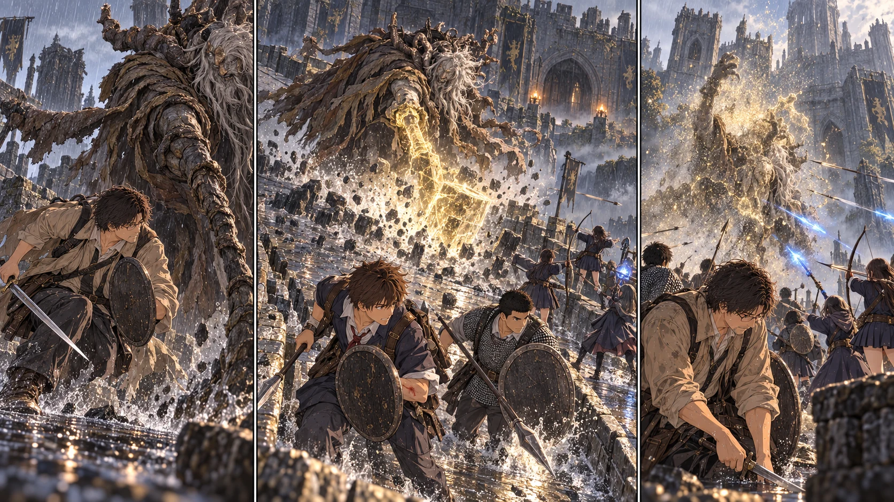

最新の本編へ · 前の場面へTURN1-46 · 門番を越える。

DAY39、朝。昨日までの地図を畳む前に、先生は紙の端へ『四十日目の夜』と書いた。城を一日で片づけるための線ではない。今夜までに戻れる場所を、先に決めるための線だった。
祝福のそばで、蓄えたルーンを順に渡す。先生はLv35へ。二つの探索隊は全員Lv21、生活を守る二十人もLv11になる。誠は手を開いたり握ったりしてから、昨日直した木桶を持ち上げた。『こっちにも回してくれるんだな』。一つ上がっただけで、遠征に出る人だけの話ではなくなる。
カーレから矢四十本を買い足し、先生の小盾の握りと服の裂け目を直す。鎖帷子の入荷はまだない。盾の表面に残る古傷を親指でなぞると、陽太が自分の革盾を軽く当てた。『先生、今日はこっちも見てますから』。その後ろで大地は鎖の襟を確かめ、短槍を持ち直した。
出るのは二十一人。先生と十六人が戦場へ、結衣たち四人は入口側の救援へ。教会に十二人を残す。颯は指笛を手にしたまま見送った。今日は徒歩だ。『帰ってきた人数、僕も数えます』。先生は頷き、最後尾へ回った。
嵐の関門では巡回の間隔が昨日と違った。先頭が岩陰に止まり、その合図を後ろまで渡す。三十分、余分に待った。誰も先を急かさない。十日前なら並んでいるだけで精一杯だった列が、今は少しずつ隙間を開け、同じ合図で動いた。
城に向かう坑道の祝福には、触れない。結衣がその位置と入口を交互に見た。救援用に残す光だ。この世界の霧は、入口を確保していれば戻れる。ただし追撃まで止めてくれるわけではない。蓮が退路を示し、花と千夏が射線を左右にずらす。ロジェールの金色の印は残っていたが、今日は自分たちの編成で入る。
石橋の先へ、一つの影が落ちた。角。灰色の皮膚。石を叩く、節くれだった杖。マルギットが身を起こすと、雨粒が毛皮を伝って落ちる。画面の中で何度も見たはずなのに、その肩が自分の頭よりずっと高い。それでも先生は、足元の幅を先に見た。後ろへ逃げ続ければ、崖が来る。
杖が上がる。まだだ。先生の膝がわずかに動き、それを止めた。敵は振り下ろさない。待っている。肩が本当に沈んだ瞬間、先生は内側へ転がった。背中のすぐ後ろで石が割れる。振り向きざまに一太刀だけ当て、離れる。欲張らない。その背を越えず、空いた脇へ花の矢が入った。
『右、空いた！』。千夏の声で、拓海の青い弾が走る。大地と健太は同じ場所で盾を重ねず、杖の向いた側だけを受け持った。マルギットが射手へ顔を向けると、先生が横から剣を当てる。こちらを見たのは一瞬だった。永遠に引きつけられるわけではない。その一瞬で、航が射る位置を変えた。
最初の連携は、通った。巨大な身体にも傷が増えた。直人が盾の陰で息を吐く。紬が先生の背に触れ、防護の祈りを一度重ねた。生徒たちは、もう足手まといではなかった。だが次の瞬間、雨の中へ金色の輪郭が生まれる。人間の背丈をはるかに超える槌。先生の知っている動きと、見上げる現実との間に、ほんの短い遅れがあった。
『散れ！』。光の槌が落ち、石片が横へ飛んだ。陽太が花の側へ革盾を傾ける。盾が跳ね、腕が下がった。槍を握り直そうとして、指が滑る。血は多くない。それでも本人の顔を見れば、続けてはいけないのがわかった。『……腕に力が入らない』。陽太は、痛いと言った。
A隊が下がる。直人が前を向き、陸が陽太の身体を支える。花は弓を下げ、悠と紬が六人の間を空けずに続いた。入口へ渡す前に、葵が短く祈りを重ねる。陽太は自分の赤い瓶を飲んだ。全部の隊が帰るのではない。残った十一人には、まだ射線も、盾も、退路もある。 陽太は出口で振り返った。「下がる。でも、終わったらちゃんと続きを聞かせてくれよ」
小さくなった隊列へ、マルギットが踏み込む。先生の小盾が杖を斜めに弾いた。衝撃が肘まで来る。続く光の刃を同じようには受けられず、身体をひねった。脇腹が熱い。大地が一歩だけ割って入り、先生が瓶を飲む時間を作る。自分が支えるつもりで出た前線で、自分も支えられている。
千夏は陽太のいた場所を見なかった。見れば、次を射るのが遅れる。先生が左へ抜ける。蓮の手が上がる。矢が三本、違う高さから走った。続いて、拓海の最後の魔力弾。金の槌を振り切ったマルギットが、片膝をつく。先生の剣と健太の槍が、別々の側から届いた。
角のある影がほどけた。灰と金の粒が雨の中を逆さに昇っていく。誰もすぐには叫ばなかった。まだ何か来るのではないかと、盾を構えたまま城壁を見上げる。その沈黙を、入口から陽太の声が破った。『……終わった？』。千夏がようやく振り向く。『終わった。そっちは座ってて！』
結衣が一人ずつ名前を呼ぶ。出発した二十一人、全員いる。教会の十二人も、その数から消えていない。新しい死亡はゼロ。先生は小盾を下ろした。完璧に無傷とはいかなかった。それでも、下がった生徒を置き去りにせず、残る生徒の力を信じて勝てた。
橋には小さな袋と、新しい祝福の光が残った。共同のルーンは報酬を含め1,515。タリスマン袋は一つだけ、使い手を決めるまで共同保管にする。光も、今日は開かない。温存している祝福は五か所になった。一本の帰り道を、得たばかりの勝利で使い切らない。
正門の脇で、痩せた男がこちらへ顔を出した。ゴストークと名乗り、大きな門の先を避け、城壁沿いの狭い道を指す。正面には射手がいるという。先生の地図の余白に、蓮が『脇道・未踏』と書いた。奥で羽音がする。黒い影が壁の向こうへ消えたが、何羽いるのか、脚に何が付いているのかまでは見えない。
今日はここまでにした。陽太の腕を確かめ、日が落ちる前に戻る。次はこの細道を歩き、鳥を落とし、暗い部屋の扉を開くことになる。ゴドリックのいる城は、門番を倒しただけでは終わらない。攻略一日目の地図には、入っていない場所を入ったことにしない余白が残った。
夕方、エレの教会で休むと、先生の脇腹も陽太の腕も動くようになった。擦れた盾と裂けた上衣はそのままだ。基地の十二人は今日も食事と水を回していた。誠が二リットルの木桶を示し、澪は戦果より先に全員の名前を確認した。
祝福のそばへメリナが現れた。先生の前に膝をつき、褪せ人たちの集う円卓へ案内できると告げる。城へ向かう前に、鍛冶や装備を整える道もできた。ただし、まだ誰もそこへ足を運んでいない。全員が自由に飛べる場所が増えたわけではない。
夕食前、共同保管の二本を前に出した。A隊の直人には君主軍の大剣。筋力を一つ上げ、Lv22になる。B隊の大地には黄金のハルバード。Lv33まで集中し、筋力20・技量14・信仰12を揃える。両手なら持てる。だが盾は構えられない。大地がそれを確かめると、健太が隣で盾を上げた。「その間は、こっちが受ける」。まだ使い慣れた武器ではない。今日は構えを確かめるだけ。二人で740ルーンを使い、共同の残りは775になった。
作戦帳には、もう一つ書き足す。次は、協力してくれる相手を置いていかない。ロジェール本人を城で探し、使える召喚や道具を出撃前に確かめる。生徒の人数だけを頼りにする必要はない。
カーレの焚き火のそばには、借りた鍋がある。城の攻略が落ち着いたら、改めて礼を言い、買い取りか、代わりを作る方法を聞こう。明朝までの借用も、そのままにはできない。遠くへ進む準備と、ここで世話になった人への礼は、同じ作戦帳に書いておく。
雲の切れ間に、まだ赤くない月が見える。次の赤月は明日の夜。先生は新しい地図に、今日越えた門と、まだ開いていない道を書き足した。明日、城へ一歩進むか。円卓で一度、武具を整えるか。どちらを選ぶにも、今度は門番を越えた全員がいる。